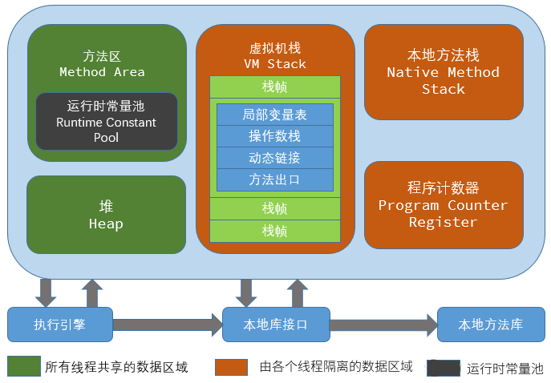
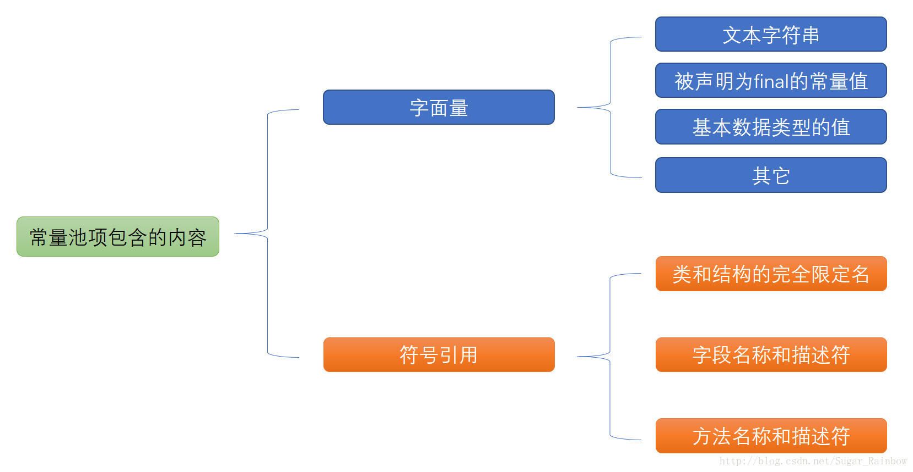
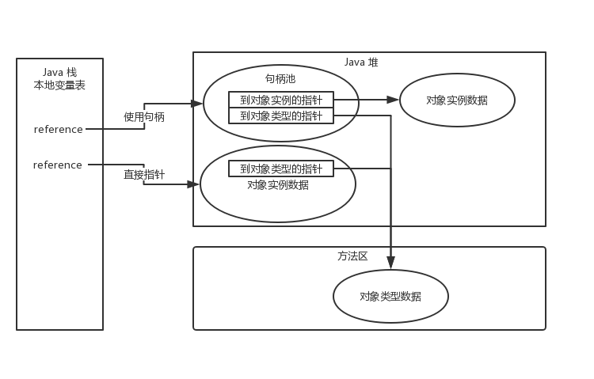

线程共享，JVM中最大的一块内存，此内存的唯一目的就是存放对象实例，Java 堆是垃圾收集器管理的主要区域，因此很多时候也被称为“GC堆”（Garbage Collected Heap），可以通过 -Xmx 和 -Xms 参数来控制该区域大小。
线程共享，它用来存储已被虚拟机加载的类信息（版本、字段、方法、接口等描述信息）、常量、静态变量、即时编译器编译后的代码等数据。
在 JDK 1.7 中，方法区被描述成堆（Heap）的一个逻辑部分，该区域也被称为 Non-Heap（非堆），HotSpot 虚拟机在 1.7 中使用永生代（Permanent Generation）来实现方法区，这样垃圾收集器可以像管理 Java 堆一样管理这部分内存，能够省去专门为方法区编写内存管理代码的工作，因此也常常有人将永生代和方法区等价，因此永生代的参数（-XX:PermSize、-XX:MaxPermSize）也限制了方法区的内存大小。
在 JDK 1.8 中，为了减少方法区的内存溢出问题以及后续 HotSpot 和 JRockit 的合并事宜， HotSpots 取消了永久代（-XX:PermSize、-XX:MaxPermSize 参数即被废弃），元空间（Metaspace）登上舞台，方法区存在于元空间，同时，元空间不再与堆连续，而且是存在于本地内存（Native memory）中，意味着只要本地内存足够，它不会出现像永久代中 “java.lang.OutOfMemoryError: PermGen space” 这种错误，默认情况下元空间可以无限使用本地内存，可以通过（-XX:MetaspaceSize、-XX：MaxMetaspaceSize）限制元空间的大小。
线程共享，存储的内容包括 Class 文件常量池（该部分内容在类编译后进入）以及翻译出来的直接引用。
Class 常量池的内容包括：

对于运行时常量池，Java 虚拟机规范没有做任何细节的要求，不同的提供商实现的虚拟机可以按照自己的需要来实现这个内存区域。运行时常量池相对于 Class 文件常量池的一个重要特征是具备动态性，也就是说并非预置入 Class 文件常量池的内容才能进入方法区运行时常量池，运行期间也可能将新的常量放入池中，比较常见的比如 String 类的 intern() 方法。
线程私有，生命周期与线程相同，描述的是 Java 方法执行的内存模型：每个方法执行的同时都会创建一个栈帧（Stack Frame）用于存储局部变量表、操作数栈、动态链接、方法出口等信息。每个方法从调用直到执行完成的过程，就对应着一个栈帧入栈到出栈的过程。
局部变量表存放了编译器可知的各种基本类型（boolean、byte、char、short、int、float、long、double）、对象引用（reference 类型）、returnAddress 类型（指向了一条字节码执行的地址）。其中64位长度的 long 和 double 类型的数据会占用两个局部变量空间（Slot）。局部变量表所需的内存空间在编译期间完成分配，在方法运行期间不会改变局部变量表的大小。
虚拟机栈和本地方法栈的区别不过是虚拟机栈为虚拟机执行 Java 方法服务，而本地方法栈为虚拟机执行 Native 方法服务。HotSpot 虚拟机直接把虚拟机栈和本地方法栈合二为一。可通过 -Xss 参数设置虚拟机栈大小，-Xoss 参数设置本地方法栈（HotSpot 虚拟机上该参数不生效）。
线程私有，一块较小的内存空间，它可以看作是当前线程所执行的字节码的行号指示器，此内存区域是唯一一个在Java虚拟机规范中没有规定任何 OutOfMemoryError 情况的区域，因此该区域也变成了程序员最不关注的一个区域。
线程私有，并不是虚拟机运行时数据区的一部分，也不是 Java 虚拟机规范中定义的内存区域。Java NIO （New Input/Output）是一种基于通道（Channel）与缓存区（Buffer）的 I/O 方式，它可以使用 Native 函数库直接分配堆外内存，然后通过一个存储在 Java 堆中的 DirectByteBuffer 对象作为这块内存的引用进行操作。这样能在一些场景中显著提高性能，因为避免了在 Java 堆和 Native 堆中来回复制数据。
该区域也可能导致内存溢出，一个明显的特征是在 Heap Dump 文件中不会看见明显的异常。因此，服务器管理员在根据实际内存配置虚拟机参数时，需要考虑到直接内存需要的空间，可以通过 -XX:MaxDirectMemorySize 来指定直接内存的大小，如果不指定，则默认与 Java 堆的最大值（-Xmx）一样。
接下来看看我们平常的一个 new 操作在 JVM 中又是怎样一种过程呢？（讨论的是普通 Java 对象，不包括数组和 Class 对象等）。
当执行 new 操作的时候，首先进行的是在Java 栈的局部变量表中分配一个对象引用（reference 类型，不等同于对象本身，可能是一个指向对象起始地址的引用指针，也可能是指向一个代表对象的句柄）。
JVM 检查这个对象是否能在常量池（指的是 Class 文件常量池）中定位到一个类的符号引用，并且检查这个符号引用代表的类是否已经被加载、解析和初始化过。如果没有，那必须先执行类加载过程（静态块、静态变量、静态方法加载进静态方法区等操作）。
对象所需的内存大小在类加载完成后便可完全确定，因此为对象分配内存空间其实就是怎样把一块确定大小的内存从 Java 堆中划分出来。一般有两种分配方式：
指针碰撞
Java 堆中的内存是绝对规整的，所有用过的内存放在一边，空闲的内存放在另一边，中间放着一个指针作为分界点的指示器，分配内存就仅仅是把那个指针向空闲空间那边挪动一段与对象大小相等的距离。
空闲列表
Java 堆中的内存并不是规整的，虚拟机维护了一个列表，记录了哪些内存块是可用的，在分配的时候从列表中找到一块足够大的空间划分给对象实例，并更新列表上的记录。
内存分配的方式由 Java 堆是否规整决定， Java 堆是否规整又是由所采用的垃圾收集器是否带有 compact（压缩整理）功能决定。比如 Serial、ParNew 等基于 stop-and-copy 算法的收集器就具有 compact 功能，而 CMS 这种基于 mark-and-sweep 算法的收集器就不具有 compact 功能。
虚拟机默认使用 CAS 配上失败重试的方式保证内存分配操作的原子性，可通过 -XX:+/-UseTLAB 指定使用 TLAB（Thread Local Allocation Buffer， 本地线程分配缓冲）；
HotSpot VM 的自动内存管理系统要求对象起始地址必须是 8 字节的整数倍，换句话说，就是对象的大小必须是 8 字节的整数倍。因此，当对象实例数据部分没有对齐时，就需要通过对齐填充来补全。
接下来虚拟机加载非静态块、非静态方法、非静态变量，并将分配到的内存空间都初始化零值（引用类型初始化为 null，int 类型初始化为 0 等），这一步操作保证了对象的实例字段在 Java 代码中可以不赋初始值就能直接使用。
接下来虚拟机将进行对象头的填充设置，HotSpot 虚拟机的对象头包括一般两部分信息：
第一部分（Mark Word）
存储对象自身的运行时数据，如哈希码、GC 分代年龄、锁状态标志、线程持有的锁、偏向线程ID、偏向时间戳等，这部分数据的长度在 32 位和 64 位虚拟机（未开启压缩指针）中分别为 32bit 和 64 bit。
第二部分（类型指针）
对象指向它的类元数据的指针，虚拟机通过这个指针来确定这个对象是哪个类的实例。但是并不是所有的虚拟机实现都必须在对象数据上保留类型指针，比如通过句柄访问。下文会提到。
如果对象是一个数组，那么对象头中还必须有一块用于记录数组长度的数据，因为虚拟机从数组的元数据中无法确定数组的大小。
如果有父类，则父类按上述流程保证被加载。
现在堆中的对象实例有了，栈中的 reference 也有了，怎么将两者关联在一起呢？目前主流的方式有使用句柄和直接指针两种：
使用句柄
Java 堆中划分出一块内存作为句柄池，reference 中存储的就是对象的句柄地址，而句柄中包含了对象的实例数据与类型数据各自的具体地址信息。它的优点就是 reference 存储的是稳定的句柄地址，在对象被移动时只会改变句柄中的实例数据指针，而 reference 本身不需要修改。
直接指针
reference 中存储的直接就是对象地址。它的好处就是速度更快，节省了一次指针定位的时间开销。

HotSpot VM 使用的直接指针进行对象访问。